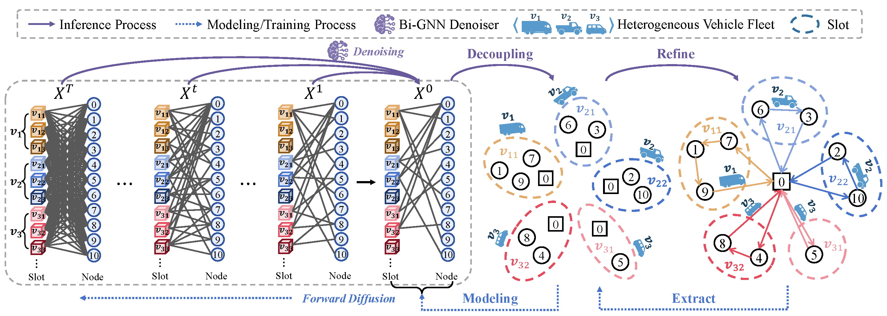
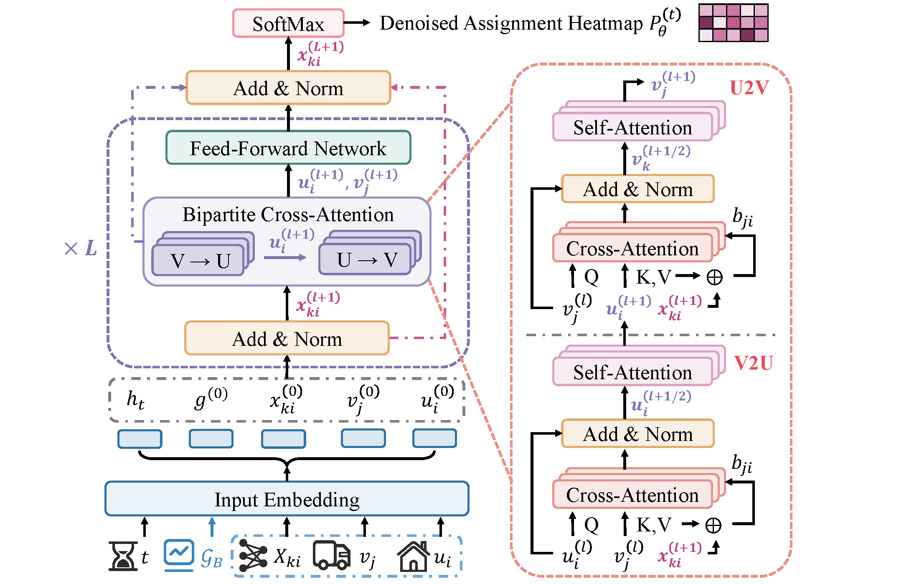

Abstract
Diffusion models have demonstrated promising results on combinatorial optimization (CO) problems such as the Traveling Salesman Problem (TSP). Existing approaches typically encode a solution of a problem instance as a graph, where edges represent the visiting order between nodes. These approaches perturb the local structure of a given solution by adding noise and then reconstruct a lower-cost solution guided by the optimization objective. However, existing graph constructions usually encode only customer information and fail to incorporate vehicle features, such as capacity limits and operational costs, which are critical in real-world applications. Consequently, current diffusion-based solvers struggle to generalize to more complex routing variants, such as the Heterogeneous Fleet VRP (HFVRP). To address these limitations, this paper proposes BigDiff, a bipartite graph–based diffusion solver. We first model each problem instance as a slot–customer bipartite graph, with one partition representing slots (where a slot corresponds to a single route starting and ending at the depot) and the other representing customers. Instead of using the diffusion model to reconstruct the exact visiting sequence between nodes, we frame the learning task as predicting which customers belong to which slots. Subsequently, a trust-region-guided local search procedure is employed to refine the visit sequence within each slot. Compared with PyVRP using 10-second and 20-second time budgets on 50-node and 100-node instances, respectively, BIGDiff achieves comparable performance with inference times of only 99 ms and 232 ms.

Unified bipartite modeling of customer-to-vehicle assignment for CVRP and HFVRP.

The structure of fleet-aware bipartite graph denoising network.
BibTeX
@article{Qimen2026,
title={BigDiff: Bipartite Graph-Based Diffusion Solvers for Vehicle Routing Problem},
author={Anonymous Author(s)},
journal={40th Conference on Neural Information Processing Systems (NeurIPS 2026},
year={2026},
url={https://big-diff.github.io}
}